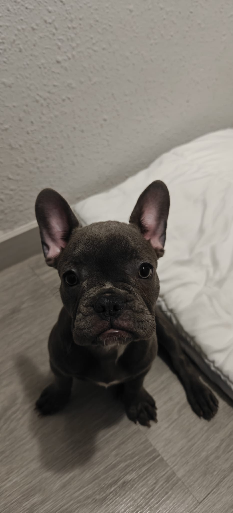

La Saga de la "M" (Conexión Familiar)
La letra M unifica a vuestros compañeros. Mako comparte inicial con su hermana perruna Miley. Además de compartir la inicial, los dos reflejan el mismo espíritu feliz: un incondicional amor por el agua (¡Mako estrenando pronto su piscina!) y una agilidad asombrosa para saltar de alegría ante cualquier juego.
El Tiburón Mako (Agua y Velocidad)
En vuestro primer encuentro en la protectora, Mako os fascinó por su enérgica bienvenida: ¡no paraba de dar saltos de locura en su box!. El Tiburón Mako es, de hecho, mundialmente conocido por ser un nadador ultra veloz que ama el océano abierto y ostenta el título de el tiburón más saltarín del planeta, elevándose majestuosamente sobre el agua.
La Raíz Ancestral (El Diente Protector)
En el idioma nativo de Nueva Zelanda, el Maorí, la palabra Mako significa literalmente "tiburón" o "diente de tiburón". Los dientes de Mako se han considerado tradicionalmente amuletos sagrados que otorgan fuerza espiritual, agilidad física, protección familiar y coraje frente a la adversidad. ¡Un nombre imbatible para vuestro nuevo protector de la casa!